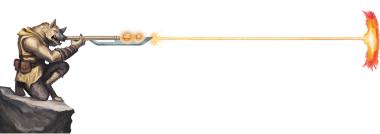

数个世纪以前，泽尼尔群落的豺狼人就抛弃了对邪魔的信仰，作为自由民开始生活。第四章中探讨了他们在卓姆和科瓦雷大地上所扮演的角色。你豺狼人角色具有如下特质。
属性值加成Ability Score Increase.你的体质加1。此外，你的力量或敏捷加2。
年龄Age.年轻的豺狼人生长迅速。一只豺狼人在数个月后便能照顾自己，而在5岁是便会被当做成人对待。豺狼人可以活到30岁左右。他们直到生命的尽头都会保持旺盛的生命力；死于衰老的标志是几日内出现的严重衰颓。许多人认为这种不同寻常的生命周期和豺狼人的超自然起源脱不了关系。
体型Size.豺狼人身高在7尺到8尺之间，体重在250磅到300磅之间。你的体型是中型。
速度Speed.你的基础步行速度为30尺。
黑暗视觉Darkvision. 你能黑暗和微光光照下视物。在微光光照下，你身边60尺内可以视为等同于明亮光照。而在黑暗中，该范围内可视为等同于微光光照。你无法在黑暗中分辨颜色，只能看到有灰度的黑白画面。
啃咬Bite.你的牙齿是天生武器，你能以它们进行徒手攻击。当你以啃咬攻击命中时，你造成1d4+你的力量调整值的穿刺伤害而非通常徒手攻击的钝击伤害。
猎手感官Hunter’s Senses.你获得以下一项你所选择技能的熟练：察觉，隐匿或生存。
横行Rampage.在你的回合中，当你进行一次使用啃咬的徒手攻击或以一次攻击将一个生物的生命值降低到0时，你可以以一个附赠动作移动等于你一半速度的距离并进行一次武器攻击或啃咬攻击。
语言Languages.你可以说、读、写豺狼人语，以及选择的通用语或者地精语。
辨别一个泽尼尔豺狼人的最重要的标识便是它的嗥叫。虽然听上去很短，但嗥叫声音中包含了一系列变化的超声波，其中表明了氏族、个人身份和家庭归属（泽尼尔豺狼人通过母系来追溯家族）。因为大部分非豺狼人生物都不可能准确地复制嗥叫，对于客户和其他外族，豺狼人还使用契名。所有的豺狼人都使用契名的基本结构；名字的变体表示性别，但对于不说豺狼人语的人来说，很少会有人意识到这一点。泽尼尔豺狼人通常会在正式介绍中附上氏族名称，如：“吉灵·巴拉卡斯，泽尼尔氏族（Ghyrryn Barrakas, Znir）”
豺狼人契名Gnoll Contract Names: 达格尼尔Dagnyr, 戴恩Dhyrn, 吉灵Ghyrryn, 格纳斯克Gnasc, 格诺瑞克Gnoryc, 格林Gnyrn, 格里尔Gnyrl,亨恩 Hyrn,洛恩 Lhoryn, 雷尔Lhyr, 雷尔勒Lhyrl, 莫格尼尔Mognyr,米尔 Myrl, 索格林Sorgnyn, 塞恩Thyrn,托里克 Toryc, 伊尔格林Yrgnyn, 伊里奇Yrych
